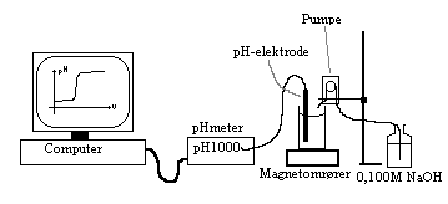

At repetere titrerkurver fra 1g, at øve brugen af programmet DATALYSE, og øve brug af modelfaciliteten
| Sikkerhed og affald: Da vi i denne øvelse arbejder med meget fortyndede syrer og baser er der ikke de store sikkerhedshensyn, men husk altid at vaske hænder efter forsøget, og hvis I får kemikalier på fingrene. Affald kan bortskaffes i vasken. |
PC med programmet Datalyse, magnetomrører, pH-meter med elektrode og RC232-interface, peristaltisk pumpe, stativ, HCl med ukendt koncentration, 0,100M NaOH.

Opstillingen
På figuren samles. Dernæst skal pumpen kalibreres. Det gøres ved at pumpe et måleglas fuldt, f.eks. et 25mL måleglas, og samtidig måle hvor lang tid det tager. Ud fra dette kan pumpehastigheden udregnes i mL/s. Dette skal bruges til at kalibrere X-aksen. Først når opstillingen er samlet og godkendt må PC’en tændes (ellers risikerer I at brænde PC’en af - og det er dyrt).
Program
Vælg programmet Datalyse. Under menupunktet apparat vælger i Firma: IMPO, og apparat: pH1000. "pH1000" dukker nu op på menulinien. Vælg dette, og indstil programmet til at måle for hver 1 s, max antal målinger = 1000 (I kan altid stoppe målingen), og husk at kalibrere X-aksen med pumpehastigheden (antal mL/s)!!! Det pynter også hvis I laver den rette aksebetegnelse på X-aksen (V/mL). Få indstillingen godkendt af læreren inden I starter forsøget.
Start
Afmål så 25 mL (pipette!) af syren, og overfør til bægerglasset, og sørg for at elektroden er dækket, samt at omrørermagneten ikke rammer elektroden. Er der problemer kan I tilsætte yderligere 25 mL syre, eller tilsætte 25 mL demineraliseret vand. Førstnævnte har indvirkning på forsøgets længde, sidstnævnte halverer den aktuelle koncentration af syren i bægerglasset, med hvad deraf følger for resultatet. Dyp slangen ned i bægerglasset, og start pumpen præcis samtidig med at I starter dataopsamlingen (Klik på MÅL).
Stop
Når titrerkurven ligner en "rigtig" titrerkurve stopper I programmet (klik på STOP). Bestem ækvivalenspunktet og print grafen ud.
Bagefter skal I bruge model-funktionen:
Analyse
Klik på MODEL, der kommer nu en dialogbox frem hvor I kan vælge forskellige faner. Start med at vælge Menu, og vælg her: Vælg titrand: Å en syre. Så vælger i Titrator, og her indstilles koncentrationen af NaOH, pKB for NaOH (find den f.eks. i databog), og evt X-max. Vælg dernæst Syre 1, og indstil her syrens pKS til 0 med "scrollbar’en". Indstil også Volumen af syren (25 mL). Tilbage er nu at regulere på koncentrationen, det gøres også med en scrollbar. På grafen kan I så se den teoretiske titrerkurve ændre sig. Når I synes den passer med den målte graf, klikker I på Memo, så noteres indstillingerne på et lille notesblad I kan printe ud sammen med grafen.
Når forsøget er færdig pumper I en masse demineraliseret vand gennem slangen, skyller pH-elektroden, og rydder pænt op.
Efterbehandling
Bestem ud fra kurven syrens koncentration, og sammenlign med den værdi som modellen er kommet med.